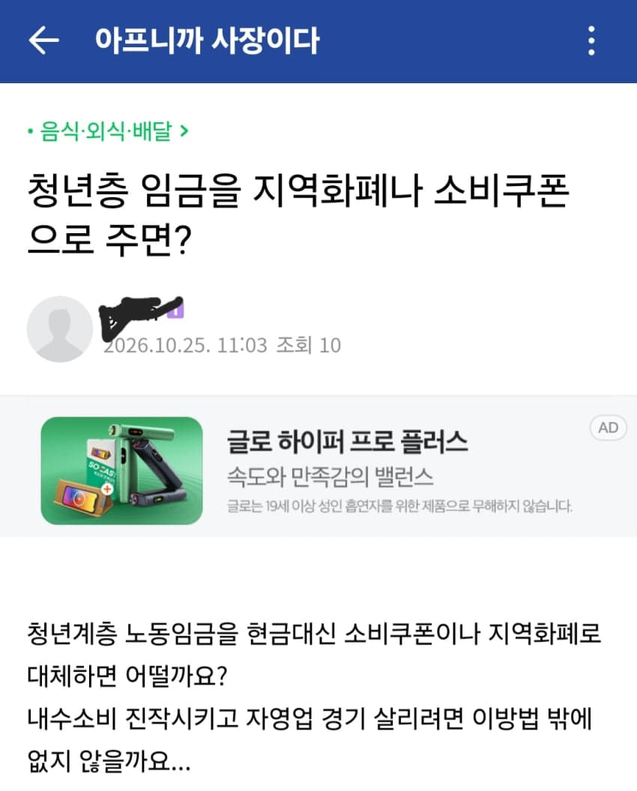
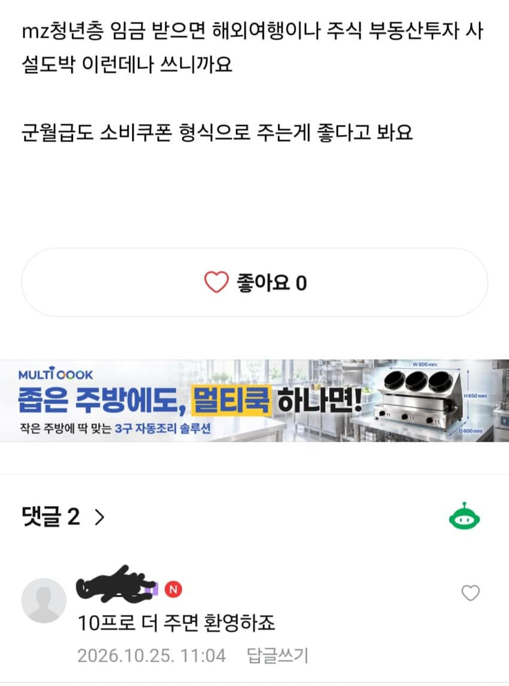

느그매요
그러면 자영업자도 지역화폐 받으면 현금정산x 다시 지역화폐로 받아야지ㅋㅋㅋ
ㅋㅋㅋㅋㅋㅋ커피 결제 페리카로 해도되죠?
당근: 소비쿠폰 팝니다 5% 할인
우리나라 자영업자들이 망하는 이유
빡대가리들 비율이 존나 높음 ㅋㅋㅋㅋ
좋은데 2030 월급의 절반 지역화폐로 주는거 좋은듯
지랄하지 마세요 좀
지랄 좀
좆같은소리는 생각만좀하세요
어그로 대박이네
할꺼면 다하지 왜 2030만 하노 ㅋㅋ
영포티 혐오에 찌든 개드립에 2030좀 패보고 싶었습니다.
(정신이) 아프니까 사장이다
조회수 10, 댓글 2
본인이 쓰고 본인이 퍼오고 ㅋ
1원=1.1페리카 도입하자 이거잖아
지역화페, 민생지원금이 지역 내에서만 소비되니 지역경제가 활성화되고 소상공인에게 도움이 된다는데
그거 한번 거래되어 세탁(?)되면 일반현금이 되고, 결국 그 자영업자가 지역 '밖'에서 써버리면 무용지물이 되는거지
지역상품권 다 없애야함;;
세금으로 자영업자 쌀먹하기 구조인데
이걸...
저러면 가격 더 올릴게 뻔한데 ㅋㅋ
근로기준법 위반입니다.
자영업자가 받은 지역상품권 정산금을 다시 지역화폐로1.1배 줘서 지역경기를 더 살리는건 어떨까?ㅋㅋㅋ
지자체 : 지역화폐로 버셨으니까 쓸 때도 지역화폐로 쓰셔야죠!